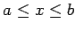
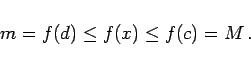

Inhalt Index DeskTop Bronstein

 Funktionen und ihre Darstellung Funktionsbegriff Stetigkeit einer Funktion Eigenschaften stetiger Funktionen
Funktionen und ihre Darstellung Funktionsbegriff Stetigkeit einer Funktion Eigenschaften stetiger Funktionen


Wenn eine Funktion f(x) auf einem abgeschlossenen Intervall [a,b] definiert und stetig ist, dann besitzt f(x) dort ein absolutes Maximum M und ein absolutes Minimum m, d.h., es existiert in diesem Intervall wenigstens ein Punkt c und wenigstens ein Punkt d, so daß für alle x mit  gilt:
|  | (2.35) |
Die Differenz zwischen dem kleinsten und dem größten Wert einer stetigen Funktion wird ihre Schwankung in dem gegebenen Intervall genannt. Der Begriff der Schwankung einer Funktion kann auch auf Funktionen ausgedehnt werden, die keinen größten oder kleinsten Funktionswert besitzen (s. Lit. [22.17], Bd. 3).